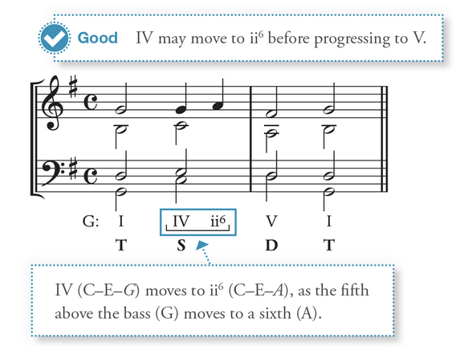
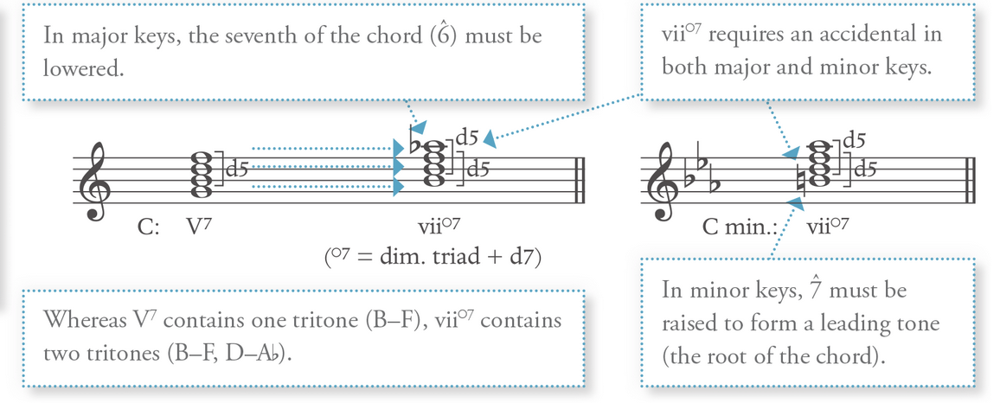
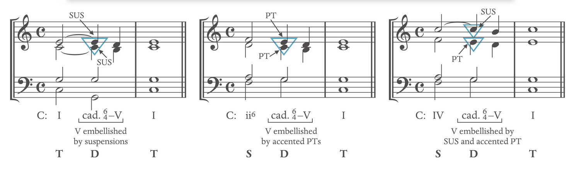
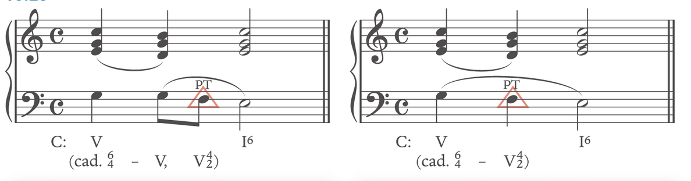
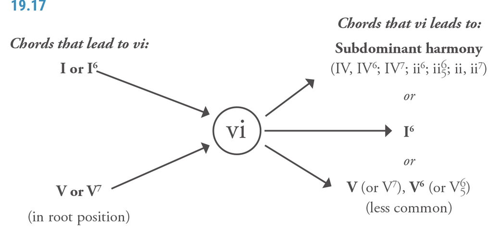

Chord Function
Chord Function Link to heading
==All chord must contain the root and the 3rd**==
==Classic Music: All the chord should abide to the harmony restriction rules==
==The way that they are categorized into TSDT because they have a share common tone==
==Anything that are not TSDT are called Harmonic prolongation==
==Do not raise the leading tone when it’s not part of a dominant function**==
Harmonic prolongation Link to heading
Harmonic prolongation: stretch out of a particular harmonic function.
- Same function Chord i.e. T-T-T S-S-S, D-D-D
- The sandwich: alternating a chord i.e. I-IV-I
- mini TSDT: a short TSDT as a Tonic
Tonic Chord Link to heading
I: Link to heading
Provide stability
Best to double the root. Double the fifth/third is also possible
The upper part (soprano, alto, tenor) stays or is moved to the nearest chord tone.
I6: Link to heading
Less stable
Any note can be doubled
Extension/alternate/substitute of I chord
Can NOT be served as AC (authentic cadence)
Used as evaded cadence (when expecting I for cadence, but used I6)
Watch out for parallel octaves
Avoid V7 - I6 progression
I64: Link to heading
See Cadential V64
Subdominant Chord Link to heading
==(all voices should move in contrary to the bass to avoid parallel)==
VI can also be subdominant Chord Link to heading
ii6(5) and IV Major Link to heading
IV: Double the root (4̂)
ii6: Double the root (4̂) or the bass (2̂)
ii6 or ii65 can embellish I or I6, but are usually avoided in basic harmony exercises.
Note that 6̂ is semi-tone lower than major
Leads effectively to a root position dominant chord AC or HC; Especially effective with i6-D-T chord
Never in a D-S order (except in special circumstances)
IV-ii6 shares so many notes. This chord essentially represents an elaboration of a single harmony. IV: 461, ii6: 246, 1->2: The melody note

ii°6, iiØ65, iv Minor - see Major with the following restriction Link to heading
In a minor key, 6̂ tends to pull down to 5̂
6̂-7̂ in minor created A2, exotic and should be avoided
Avoid doubling 6̂
Raise 6̂ if 6̂-7̂ as in the ascending melodic minor -> raise 6̂ change the quality of the chord: turns them into the major version of the chord ii6, ii65, IV
IV(6) - lead to dominant Link to heading
Phrygian cadence: iv6-V in the minor
If the bass or melodic line ascent from 6̂ to 7̂, raise the 6̂ accordingly
Mostly used with a stepwise motion in the bass
ii (Avoid ii°) - lead to dominant Link to heading
Avoid using ii° in minor (it sounds harsh)
Double the root of ii triad
ii° is often found in sequence
IV7, ii7 lead to dominant Link to heading
IV7 and ii7 can appear in any inversion
ii7 is usually used with ii65
IV7 is usually used with its root/first position
The voice-leading problem in S-D can be avoided by a large leap in the middle voice or inserting cadential 64
ii6(5), IV(7) (and their minor) - Lead to Tonic Link to heading
Embellishing the tonic harmony: It can be sandwiched by the Tonic chord: I - IV - I
Typically 1̂ sustained and other moves in neighbour tone
Can form Plagal Cadence: IV-I motion
Most common melody used with the sandwich chord: 3̂-4̂-3̂, 5̂-6̂-5̂, 1̂-1̂-1̂
IV6 appears in between IV and I: where IV arpeggiates up to I: Ie.g. I-IV-IV6-I.
Note that I-IV6-I is NOT a normal progression
Note that I-IV6-I6 is a good progression
IV6 embellishes the tonic harmony
Just like IV: ii6 or ii65 can embellish I or I6, but are usually avoided in basic harmony exercises.
Note that the chordal seventh of ii65 is not treated as dissonance but sustained to I
Subdominant Alternation Link to heading
When moving between subdominant chords, it is typical for the root to move down by a third, but it is possible to move up by a third. e.g. IV-ii is more common
Dominant Chord Link to heading
==Do not raise the leading tone when it’s not part of a dominant function**==
V: Link to heading
Best to double the root. Double the fifth is also possible
The upper part (soprano, alto, tenor) stays or is moved to the nearest chord tone. 7̂ must be raised in minor
Do not double the leading tone.
If the leading tone appears in the outer voice, it must resolve up: if in the inner voice, it does not.
V6: Link to heading
Functions like the V chord
Typically in the middle of the phrase, it should not be part of the cadence
Can have a problem of leaping into tritone
V7: Link to heading
Should NOT be used as a Half Cadence (HC)
There are two tendency tones: Chordal seventh resolved down, and Leading tone resolves up.
Fifth must be omitted when the leading note appears at the top of a V7-I progression (or it creates a voice leading issue) - Always uses triple root.
V-V7 is labelled as V8-7: INT (embellishing tone) may decorate the chordal seventh before resolving down.
V65: Link to heading
Often embellishing a tonic harmony as neighbour tone or incomplete neighbour tone
Must lead to I
Usually none of the note is repeated or omitted
V42: Link to heading
Often embellishing a tonic harmony neighbour tone or incomplete neighbour tone
Must lead to I6
The chordal seventh is so prominent that V42 must not be followed by V7 or other root position V chord and always resolved to I6
Usually none of the notes is repeated or omitted
V43 or vii°6 Link to heading
Often embellishing a tonic harmony neighbour tone or passing tone for I or between I6
3̂-4̂-5̂ melody can be problematic, exceptions are made:
- d5-P5 (parallel) is fine with V43 to I6 only (between 4 and 5)
- The chordal seventh of V43 may move up by step, V43 to I6 only (only in melody)
vii°7: Link to heading

contain two tritones and always require an accidental, no matter major or minor
vii°7 and its inversion is treated like any V7 inversion, acts as embellishment
vii°42 is far less common because it leads to I64
Voice leading with vii°7 should be mindful to avoid a parallel motion to a perfect fifth
Major: add a flat to chordal seventh of vii°7
Minor: raise the natural leading tone
vii°7 is a stronger dissonance compared to viiØ7
viiØ7 Link to heading
Exist only in the major key and does not require accidental
Functions much like vii°7
It can be in root position or inversion
Often used as a substitute of the dominant chord
Cadential 64 Link to heading
64V is dominant harmony
A combination of I64 and V/V7
Can follow subdominant, cannot follow a dominant chord and almost always followed by I: 64-V-I
The embellishment of cadential 64-V is usually formed through Suspension, Passing tone or Suspension AND Passing tone.

Always double the bass
The fourth is dissonance, which should never be doubled and should solve down by step. The only exception is when it moved to 2̂ (can move up by a step) in a complex situation.
The sixth is not dissonance, can move up/down, usually down by a step
It should appear on a strong beat
(In triple meter, beat 2 is usually stronger than beat three especially when 64V is on beat 2)
It can be part of a half cadence or authentic cadence
Exception: if the bass of V42 is a passing note, then it is possible to do a V46-42. Mainly used as evading cadence

Multi-function of VI Link to heading

V-vi substitutes the case of V-I progression
Deceptive cadence: V(7)-vi
I-vi: double the root and voices move in contrary: Descending by third frequently occurs. Ascending third is far less common
V(7)-vi: double the third in vi to solve the leading tone issue (possible to double the root of vi in the major key)
VI6: embellishing Tonic chord in upper voice & used as part of modulation: VI6 should not be used in basic four-part harmony exercises.
Double the fifth creates a parallel fifth/eighth
Sequence Chord (See Sequence Section) Link to heading
iii or III Link to heading
Not often used in diatonic contexts (where music stays within single keys)
iii/III substitute for I6. Root position shares two notes with I6. e.g. vi-I6-IV=vi-iii-IV, V-I6=V-iii
Mostly are found in the sequence.
The 7̂ does not need to ascend to the tonic and not be raised in minor keys if in the goal of substituting diatonic chords.
Use cases: Link to heading
More often found in the change of key:
- Modulations
- Tonicizations
- Chromatic alternations
In diatonic situations: they are mostly found in sequences
iii6 or III+6 (Minor) Link to heading
iii6 or III+6 substitute for V. Shares two notes with root V. It is usually labelled as V with an embellishing tone
iii6 is often substituted for V in the late nineteenth-century music.
Relate to iii6: V76, seventh chord + sixth replacing the fifth of V7
Should NOT be used in basic harmony exercise
vii° Link to heading
Not common, often understood as V65 with the root removed
Often found in sequence
Do NOT use it in four-part harmony
VII Link to heading
Determine a minor key tonality
hint change of key, often used to move to the relative major
Root is natural 7̂
Do NOT use it in four-part harmony
vii°64 Link to heading
Understood and labelled as V42 (V42 without root)